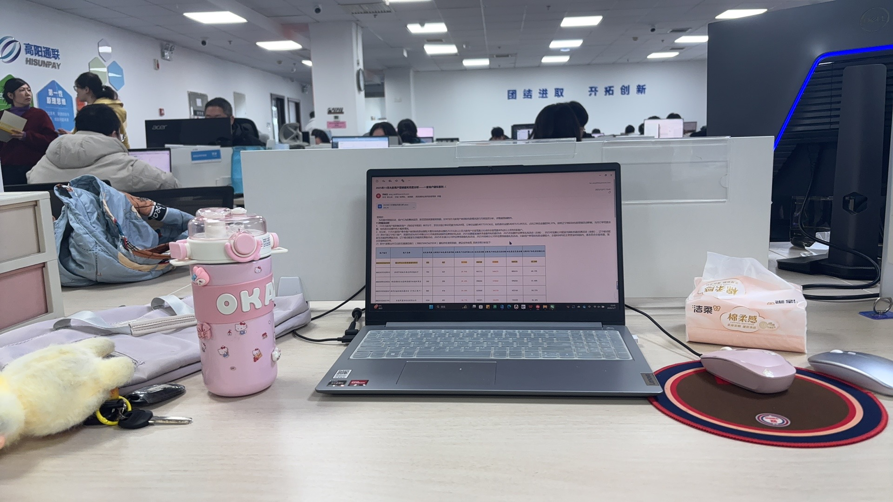

在信息爆炸的时代，学习不再是简单的“死记硬背”，而是一场关于策略、工具与执行力的综合博弈。无论是备考编制，还是攻克编程技术，唯有掌握科学的学习方法，选对高效的学习手段，才能告别盲目努力，真正实现学有所成。
框架先行，拆解学习。 面对庞大的知识体系，切忌“眉毛胡子一把抓”，先建立宏观认知框架，再填充细节。比如备考申论时，先梳理五大题型的核心逻辑；学前端时，先搞清HTML、CSS、JS的分工与关联。先搭骨架，再填肉，能让零散的知识变得系统化。 费曼输出，倒逼理解。 “以教代学”是最高效的学习法。学完一个知识点，尝试用自己的话讲给别人听，或者像我刚才一样复述给AI听。如果卡壳，就回到书本重新攻克。这个过程能暴露你的知识盲区，比单纯重复阅读强十倍。 复盘总结，构建闭环。 学习不是直线，而是螺旋上升。每天花10分钟复盘今日进度，每周整理错题本或技术笔记。将错误分类，总结共性问题，形成“学习-反馈-修正”的闭环，避免在同一个坑里跌倒两次。

快来一起科学的学习吧~工具是手的延伸，选对手段能让学习效率翻倍。 沉浸式环境，隔绝干扰。 关掉手机消息通知，使用“番茄钟”等时间管理工具，在固定的时间、安静的地点学习。尤其是学习代码或复杂理论时，沉浸式环境能保证思维的连续性，避免打断思路。 多元媒介，立体输入。 不要只依赖一种方式。看书构建理论体系，看视频解决实操难点，用AI工具答疑解惑、梳理知识点。比如学HTML时，看文档学基础，看视频学实操，用AI帮你翻译术语、总结代码逻辑，多渠道输入加深记忆。 项目驱动，学以致用。 这是技术学习最核心的手段。不要只停留在“看懂”，要动手“做出来”。从简单的静态页面开始，逐步挑战复杂项目。在解决实际问题的过程中，你会发现自己对知识的掌握远比刷题牢固。
 善用工具点这里哦~
善用工具点这里哦~
制定计划，分解目标 将大目标拆解为周、日小任务。例如“一个月掌握前端基础”，分解为每天学几个标签、写一段代码。目标越具体，执行力越强，也更容易获得成就感。 劳逸结合，保持节奏。 长期高强度学习容易疲惫。合理安排休息，保证睡眠，培养练字、游戏等爱好作为调剂。一张一弛，文武之道，保持良好的身心状态，才能持续高效地学习。 3. 坚持热爱，赋予意义。 学习是一场长跑。找到学习对你个人的意义，无论是为了更好的生活、更自由的职业，还是为了成为更好的自己。带着热爱去学，枯燥的过程也会变得充满动力。
 点这里要知行合一哦~
点这里要知行合一哦~